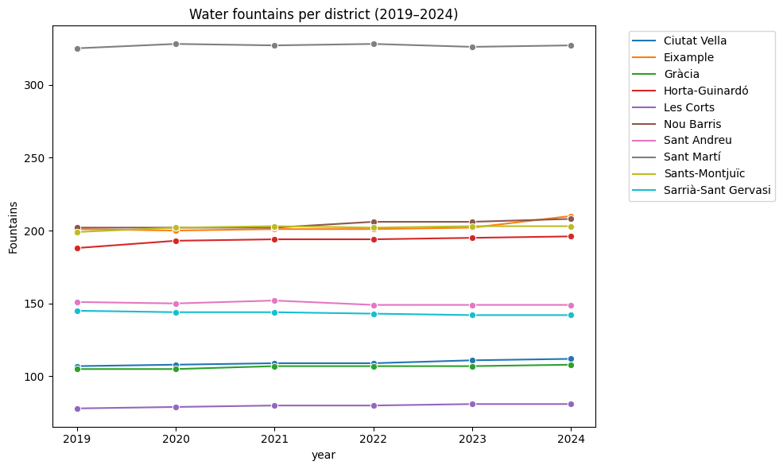
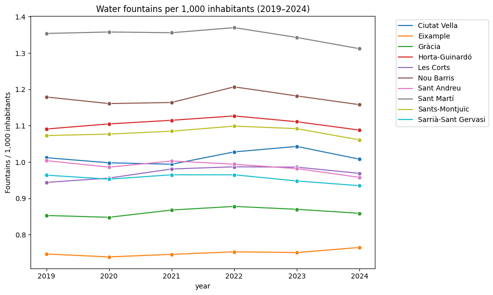

Fonts per districte (2024)
Alguns districtes concentren moltes més fonts que altres en termes absoluts. Quan normalitzem per població, la classificació canvia i revela diferències en l'accés real.

Alguns districtes concentren moltes més fonts que altres en termes absoluts. Quan normalitzem per població, la classificació canvia i revela diferències en l'accés real.

L'indicador de fonts per 1.000 habitants mostra disparitats rellevants entre districtes, especialment quan es comparen zones centrals i perifèriques.

La desviació estàndard del nombre de fonts per 1.000 habitants permet identificar quins districtes presenten majors fluctuacions al llarg del temps.

La combinació d’indicadors absoluts, valors per càpita i variabilitat temporal ofereix una visió completa de l’accessibilitat a les fonts públiques.
La normalització revela desigualtats territorials que no són visibles quan només es consideren els valors absoluts.
L’estudi de la variabilitat temporal permet identificar patrons d’estabilitat i canvi útils per a la planificació urbana i la gestió pública.